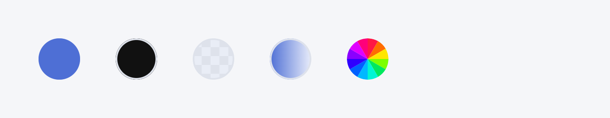
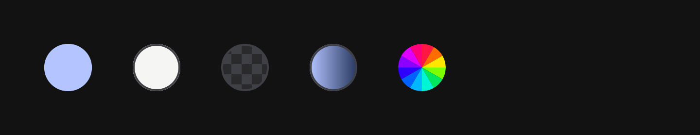

StudioColorSwatchBar
변경할 색 대상과 추천색, 팔레트 진입을 배치합니다.
- 컴포넌트 ID
studio-color-swatch-bar- 분류
- 선택
- 구현
StudioColorSwatchBar·MyWidget/app/src/main/java/com/mywidget/editor/core/designsystem/component/StudioColorSwatchBar.kt:68- 주요 API
- targets/selectedTargetId/onTargetSelected, swatches/selectedSwatchId/onSwatchSelected, onOpenPalette, swatchSpacing, swatchSlotWidth
- 지원 상태
- 선택
- 미선택
- 비활성
- 투명
- 변형
- 단일 대상
- 복수 대상
- 단색·투명·그라데이션
- 크기
- 대상 칩 40dp
- 원형 견본 28dp
- 기본 48×48dp·컴팩트 38×48dp
- 테마·토큰
- chipSurface
- outlineVariant
- StudioColorSample
- LocalStudioControlDensity
- 접근성·사용 규칙
- 견본의 이름과 선택 상태를 제공합니다. 컴팩트 가로 38dp는 기존 인라인 인스펙터의 예외입니다.
- 공통 사용 여부
- 배경·텍스트·달력·도형과 브러시 색상에서 사용
- 설계 품질
- 데이터 값과 시각 견본을 분리함
- 판단
- 유지
- 판단 근거
- 색상 입력 팝업과 인라인 빠른 선택은 다른 작업을 지원합니다.
- 구현·문서
- 현재 소스 위치와 심볼 확인
- 렌더링
- 네이티브 캡처 있음
코드 예시
val colors = MaterialTheme.colorScheme
StudioColorSwatchBar(
swatches = listOf(
StudioColorSample("primary", "강조", SolidColor(colors.primary)),
StudioColorSample("ink", "잉크", SolidColor(colors.onSurface)),
StudioColorSample("transparent", "투명", SolidColor(Color.Transparent), checkerboard = true),
StudioColorSample("gradient", "그라데이션", Brush.horizontalGradient(listOf(colors.primary, colors.primaryContainer))),
),
selectedSwatchId = "primary", onSwatchSelected = {}, onOpenPalette = {},
)Android 네이티브 예시
아래 캡처에 표시된 상태와 기기 조건을 확인했습니다.

411 × 891 dp · 560 dpi · 글꼴 1배 · API 35 · ko-KR
캡처 기준 HEAD
28c96a452 · 소스 지문 2926a62326fe · 2026-11-13T13:54:53.964821Z
411 × 891 dp · 560 dpi · 글꼴 1배 · API 35 · ko-KR
캡처 기준 HEAD
28c96a452 · 소스 지문 2926a62326fe · 2026-11-13T13:54:53.964821Z